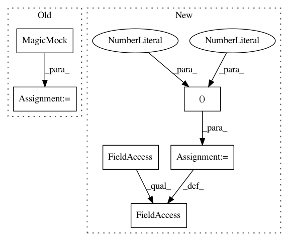

8fbb5858743dc4f356bdff3f0126899aad9c3aa8,tests/components/test_mqtt.py,TestMQTTCallbacks,test_mqtt_subscribes_topics_on_connect,#TestMQTTCallbacks#,180
Before Change
"home/sensor": 2,
"still/pending": None
}
mqttc = mock.MagicMock()
mqtt._mqtt_on_connect(mqttc, {"topics": prev_topics}, 0, 0)
self.assertFalse(mqttc.disconnect.called)
expected = [(topic, qos) for topic, qos in prev_topics.items()
After Change
mqtt.MQTT_CLIENT.topics = prev_topics
mqtt.MQTT_CLIENT.progress = {1: "still/pending"}
// Return values for subscribe calls (rc, mid)
mqtt.MQTT_CLIENT._mqttc.subscribe.side_effect = ((0, 2), (0, 3))
mqtt.MQTT_CLIENT._mqtt_on_connect(None, None, 0, 0)
self.assertFalse(mqtt.MQTT_CLIENT._mqttc.disconnect.called)
expected = [(topic, qos) for topic, qos in prev_topics.items()
In pattern: SUPERPATTERN
Frequency: 3
Non-data size: 6
Instances
Project Name: home-assistant/home-assistant
Commit Name: 8fbb5858743dc4f356bdff3f0126899aad9c3aa8
Time: 2016-01-17
Author: paulus@paulusschoutsen.nl
File Name: tests/components/test_mqtt.py
Class Name: TestMQTTCallbacks
Method Name: test_mqtt_subscribes_topics_on_connect
Project Name: home-assistant/home-assistant
Commit Name: 1ceee2d6c5904216c974c914bf37bbf3ee689ef0
Time: 2016-01-19
Author: paulus@paulusschoutsen.nl
File Name: tests/components/test_mqtt.py
Class Name: TestMQTTCallbacks
Method Name: test_mqtt_subscribes_topics_on_connect
Project Name: streamlit/streamlit
Commit Name: b1c99ba1008d472b26d306c579883d9a2b5b725c
Time: 2020-12-03
Author: tconkling@gmail.com
File Name: lib/tests/streamlit/git_util_test.py
Class Name: GitUtilTest
Method Name: test_git_repo_valid